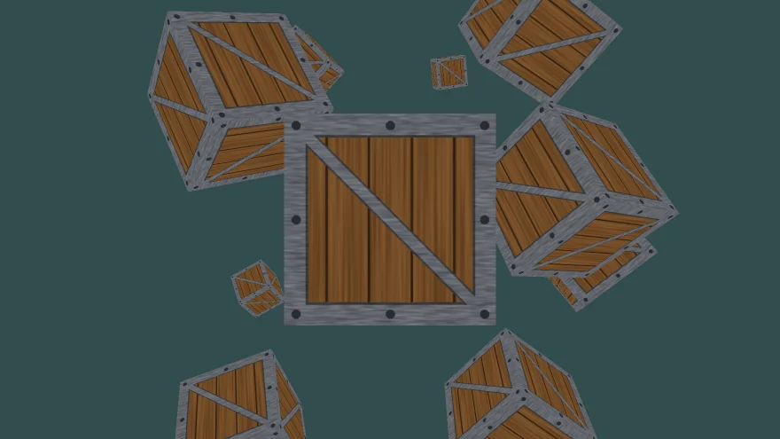

Getting Started
Coordinate Systems#
examples/Sources/06-CoordinateSystems, run with swift run CoordinateSystems. Download all examples or see how to run them.A vertex travels through several coordinate systems on its way to the screen. Splitting the journey into steps makes each one simple, and three matrices carry the vertex from one step to the next. At the end of this chapter we have real 3D: a perspective view of textured cubes with correct depth.
The spaces#
- Local space (object space): coordinates relative to the object's own origin, as stored in the vertex buffer.
- World space: where the object sits in the scene. The model matrix takes local to world.
- View space (camera space): the world as seen from the camera, with the camera at the origin. The view matrix takes world to view.
- Clip space: the output of the vertex function. The projection matrix takes view to clip.
- Normalized device coordinates: the GPU divides clip-space x, y, z by w (the perspective divide).
- Viewport coordinates: NDC mapped to pixels.
You write steps 2 to 4 as one line in the shader:
out.position = uniforms.projection * uniforms.view * uniforms.model * float4(in.position, 1.0);
Metal's conventions#
- NDC x and y run from -1 to 1 with y up. NDC z runs from 0 to 1.
- Pixel coordinates and texture coordinates start at the top left with y down.
Coming from OpenGL
OpenGL's NDC z runs from -1 to 1. A projection matrix copied from an OpenGL tutorial puts half of your depth range in front of the near plane, so geometry near the camera disappears. Always use a projection matrix built for a 0 to 1 depth range, like the one below.
Metal does not care whether your world is left-handed or right-handed; that is decided entirely by your matrices. This series uses a right-handed world, the same as most tutorials and modeling tools: +x right, +y up, and the camera looks down -z.
Perspective projection#
A perspective projection makes distant things smaller. It is defined by a vertical field of view, the aspect ratio of the view, and a near and far plane; together they bound a truncated pyramid called the frustum. Add to Math.swift:
extension float4x4 {
/// Right-handed perspective projection with a 0...1 depth range.
init(perspectiveFov fovY: Float, aspect: Float, near: Float, far: Float) {
let y = 1 / tan(fovY * 0.5)
let x = y / aspect
let z = far / (near - far)
self.init(columns: (
SIMD4<Float>(x, 0, 0, 0),
SIMD4<Float>(0, y, 0, 0),
SIMD4<Float>(0, 0, z, -1),
SIMD4<Float>(0, 0, z * near, 0)))
}
}
The -1 copies the negated view-space z into w. After the perspective divide, everything is divided by its distance from the camera, which is exactly what perspective is. Keep the near plane as far out as you can (0.1 is typical). Depth precision is concentrated close to the near plane, and a tiny value such as 0.0001 wastes almost all of it.
An orthographic projection, which has no perspective, appears in the Shadow Mapping chapter.
Model, view, projection#
struct Uniforms {
var model: float4x4
var view: float4x4
var projection: float4x4
}
var aspect: Float = 1
func mtkView(_ view: MTKView, drawableSizeWillChange size: CGSize) {
aspect = Float(size.width / size.height)
}
let model = float4x4(rotation: time, axis: [0.5, 1, 0])
let viewMatrix = float4x4(translation: [0, 0, -3])
let projection = float4x4(perspectiveFov: 45.radians, aspect: aspect, near: 0.1, far: 100)
var uniforms = Uniforms(model: model, view: viewMatrix, projection: projection)
The view matrix moves the whole world 3 units away along -z. Moving the world backward and moving the camera forward are the same thing.
A cube#
A flat rectangle makes a poor 3D demo. From now on we use a proper vertex struct and generate a cube in code. Each vertex has a position, a normal (the direction the surface faces, needed for lighting soon), and a texture coordinate:
struct Vertex {
var position: Float3
var normal: Float3
var uv: SIMD2<Float>
}
func makeCube() -> [Vertex] {
// normal, right and up direction of each face
let faces: [(Float3, Float3, Float3)] = [
([ 0, 0, 1], [ 1, 0, 0], [0, 1, 0]), // front
([ 0, 0, -1], [-1, 0, 0], [0, 1, 0]), // back
([ 1, 0, 0], [ 0, 0, -1], [0, 1, 0]), // right
([-1, 0, 0], [ 0, 0, 1], [0, 1, 0]), // left
([ 0, 1, 0], [ 1, 0, 0], [0, 0, -1]), // top
([ 0, -1, 0], [ 1, 0, 0], [0, 0, 1]), // bottom
]
let corners: [SIMD2<Float>] = [[-1, -1], [1, -1], [1, 1], [-1, -1], [1, 1], [-1, 1]]
var vertices: [Vertex] = []
for (normal, right, up) in faces {
for c in corners {
let position = (normal + right * c.x + up * c.y) * 0.5
let uv = SIMD2<Float>(c.x * 0.5 + 0.5, 0.5 - c.y * 0.5)
vertices.append(Vertex(position: position, normal: normal, uv: uv))
}
}
return vertices
}
That is 36 vertices for a cube one unit wide, wound counter-clockwise when seen from outside. Build the vertex descriptor from the struct itself so offsets can never be wrong:
vertexDescriptor.attributes[0].format = .float3
vertexDescriptor.attributes[0].offset = MemoryLayout<Vertex>.offset(of: \.position)!
vertexDescriptor.attributes[1].format = .float3
vertexDescriptor.attributes[1].offset = MemoryLayout<Vertex>.offset(of: \.normal)!
vertexDescriptor.attributes[2].format = .float2
vertexDescriptor.attributes[2].offset = MemoryLayout<Vertex>.offset(of: \.uv)!
vertexDescriptor.layouts[0].stride = MemoryLayout<Vertex>.stride
All three attributes use bufferIndex 0, the default. Because SIMD3<Float> occupies 16 bytes, the offsets are 0, 16 and 32 and the stride is 48. In the shader:
struct VertexIn {
float3 position [[attribute(0)]];
float3 normal [[attribute(1)]];
float2 uv [[attribute(2)]];
};
Draw with vertexCount: 36.
The depth buffer#
Run it and the cube looks inside out: faces drawn later cover faces drawn earlier, whichever is closer. The fix is a depth buffer, a texture that stores the depth of the closest fragment drawn so far at each pixel. A new fragment is kept only if it is closer.
Three steps enable it.
// 1. Ask the view for a depth texture.
view.depthStencilPixelFormat = .depth32Float
view.clearDepth = 1.0
// 2. Tell the pipeline about it.
pipelineDescriptor.depthAttachmentPixelFormat = .depth32Float
// 3. Create a depth-stencil state...
let depthDescriptor = MTLDepthStencilDescriptor()
depthDescriptor.depthCompareFunction = .less
depthDescriptor.isDepthWriteEnabled = true
depthState = device.makeDepthStencilState(descriptor: depthDescriptor)!
// ...and set it when drawing.
encoder.setDepthStencilState(depthState)
The depth texture is cleared to 1 (the far plane) at the start of each pass, and .less keeps fragments with a smaller depth than what is stored.

More cubes#
Drawing the same cube in ten places needs only ten model matrices:
let cubePositions: [Float3] = [
[ 0.0, 0.0, 0.0], [ 2.0, 5.0, -15.0], [-1.5, -2.2, -2.5], [-3.8, -2.0, -12.3],
[ 2.4, -0.4, -3.5], [-1.7, 3.0, -7.5], [ 1.3, -2.0, -2.5], [ 1.5, 2.0, -2.5],
[ 1.5, 0.2, -1.5], [-1.3, 1.0, -1.5],
]
for (i, position) in cubePositions.enumerated() {
uniforms.model = float4x4(translation: position)
* float4x4(rotation: (20 * Float(i)).radians, axis: [1, 0.3, 0.5])
encoder.setVertexBytes(&uniforms, length: MemoryLayout<Uniforms>.stride, index: 1)
encoder.drawPrimitives(type: .triangle, vertexStart: 0, vertexCount: 36)
}

Exercises#
- Change the field of view and the aspect ratio by hand and describe what each does.
- Make every third cube rotate over time.
- Set
depthCompareFunctionto.alwaysand to.greaterand explain what you see.